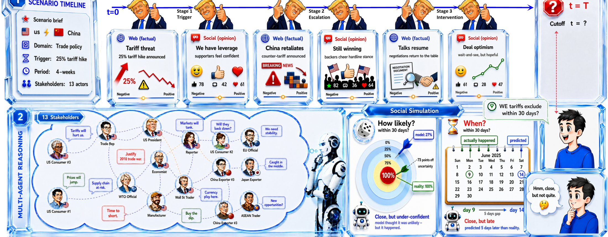
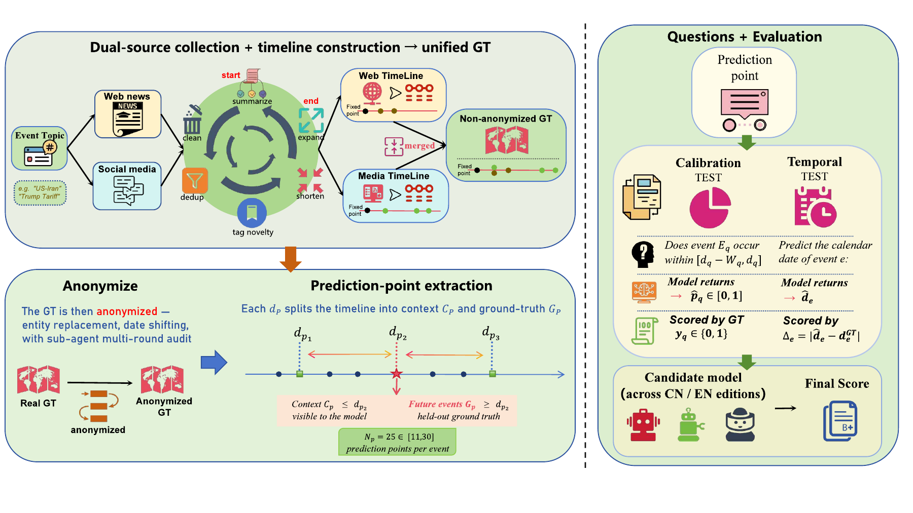

一篇论文式网页导读动机 → 反事实构造 → 双轴评分 → 实验发现
EVENTS05跨公共争议、地缘冲突、科技政策、金融与贸易
PREDICTION POINTS125每个事件 25 个截止点
SCORING AXES02 × 100概率校准 + 时间精度
MODEL COHORT6 LLMs另有 3 个 Agent 框架与 2 个非 LLM 基线
01 / WHY THIS BENCHMARK
不考模型“记得什么”，而考模型能否从早期信息推演后续
如果把一个已经发生、被广泛报道的事件原样交给模型，模型答对可能只是识别出熟悉的故事。SocietyBench 的关键设计是：把一条真实事件的前半段作为可见上下文，把后半段留作 Ground Truth；在模型看到之前，替换实体、平移日期，让故事保留因果和时间结构，却失去可以直接匹配预训练记忆的表面标签。
它和社会模拟也不同：社会模拟关心生成一个看起来像社会的虚拟群体；SocietyBench 关心在给定真实社会事件开端的情况下，模型能否预测后续演化，并且可以用已发生的后半段定量评分。

论文 teaser。 原始事件经过实体替换和日期平移后成为结构保持、标签隐藏的 counterfactual social world；模型在每个截止点只看前缀，未来节点用于评分。
02 / BENCHMARK CONSTRUCTION
从一句话课题到可审计的预测题库

Figure 2 / 方法概览。 每个 retrospective cutoff 将匿名化时间线切成可见上下文和 held-out future，再分别生成 calibration 与 temporal 两种题集。
01Collect跨 Web 新闻和五个社交平台采集事件材料。
02Distill生成按日期索引的事实层与公众意见层时间线。
03Anonymize替换实体、平移日期，并用反向识别审计检查泄露。
04Score对概率和日期分别评分，再汇总跨事件表现。
| 组成 | 论文设置 | 为什么重要 |
|---|
| 事件类型 | 公共争议、地缘冲突、科技政策、金融市场、贸易政策 | 避免单一事件形态决定结论。 |
| 时间线 | 事实事件与公众意见分层，再按日期合并 | 社会事实变化和舆论变化不必同步。 |
| 题目 | 每个截止点生成概率题与未来日期题 | 校准能力与时间定位能力分开。 |
| 发布 | 中文和英文一一对应；匿名实体与平移日期保持一致 | 跨语言版本不会成为简单的去匿名通道。 |
03 / THREE-PHASE ANONYMIZATION
匿名化不是删名字，而是同时打断实体记忆和绝对时间
A. 确定性替换
按最长匹配表替换人名、组织、地点等实体，再对一个事件的所有日期统一加上同一个随机偏移。这样保留事件内部的时间间隔，却破坏原始日历位置。
B. 反向识别审计
三个对抗式审计模型尝试从匿名材料恢复原事件和时间窗口；若持续识别成功，就进入增补和重跑，而不是直接把样本放进题库。
C. 语义一致性：替换后在段落、事件和叙事层与原始材料对照，修复实体替换造成的语义损伤。论文报告五个事件的持续 High 识别为 0/15，持续 Mid 为 2/15。
04 / EVALUATION AND FINDINGS
两条评分轴揭示“会判断”与“会定位时间”不是一回事
Calibration
模型为事件是否在指定窗口发生给出概率，按时间衰减和窗口因素加权，转换为 0–100 分。它衡量的是不确定性表达和结果判断，而不只是命中率。
Temporal accuracy
模型为未来事件给出日期，误差以天数衡量，再转成 0–100 分。它直接测试模型能否定位事件发生时间，而不是只判断“会不会发生”。
| 观察 | 论文报告 | 解释 |
|---|
| 总体上限 | 最强模型 75.0 / 100；简单锚点约 50 | 社会事件预测仍有明显余量。 |
| 轴间分离 | GPT-5.5 领先两个轴；Gemini 校准较强但时间较弱 | 单一总分会隐藏能力结构。 |
| 事件差异 | 单个轴的模型间事件差距最高达 21.4 分 | 只评一个事件的结论不稳。 |
| Agent 编排 | 三个共享 Doubao 基座的 Agent 框架没有超过基座模型 | 加一层 orchestration 不等于预测能力提升。 |
论文的核心结论：社会预测应同时报告“概率是否校准”和“时间是否准确”，并在多个异质事件上评测；单事件、单轴或事后识别都可能造成过度解读。
05 / LIMITATIONS AND RELEASE
它解决了记忆泄露问题，但不等于获得了真实社会的全部信息
需要诚实保留的限制
- 匿名化是防记忆的代理方案，不是证明模型绝对无法反推；
- 社交平台数据受平台排序、删除、审核和机器人影响，不能当作全体公众意见样本；
- 事实时间线和舆论摘要来自自动流水线，仍需要质量门控和来源审计；
- 双轴分数描述预测表现，不直接说明模型内部用了什么推理过程。
可复现材料
- 匿名化时间线和问题题库；
- 逐题模型日志与评分脚本；
- 事件级统计量和引导法置信区间；
- 事件采集、清洗、题库生成和评测服务。